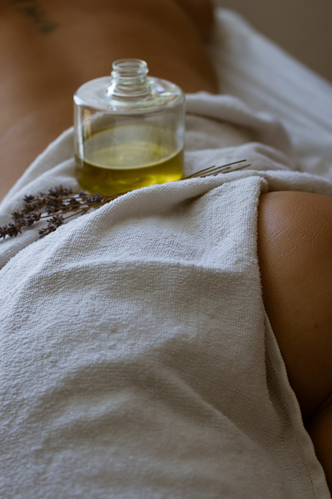
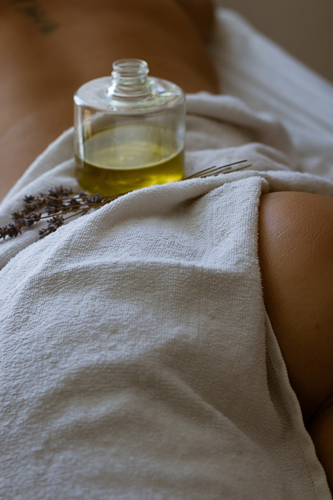

Benefits
Restores vitality and relaxes muscles.
Thermal Mud | Cleanse | Massage | Exfoliation
Stretch out on your front and allow your mind to drift away. The soundscape is in perfect harmony with the scent of essential oils. Your aesthetician will begin by massaging an organic exfoliant into your back. Then, feel purifying thermal mud envelop your skin. Sink deeper into bliss with a short back and scalp massage. Your wellness voyage continues with a foot and half-leg exfoliation followed by a massage. The treatment ends with a facial treatment: cleansed, exfoliated and massaged. Let your mind take you elsewhere and return revitalized and rejuvenated..
 

This treatment is safe during pregnancy and breastfeeding or can be adapted accordingly.